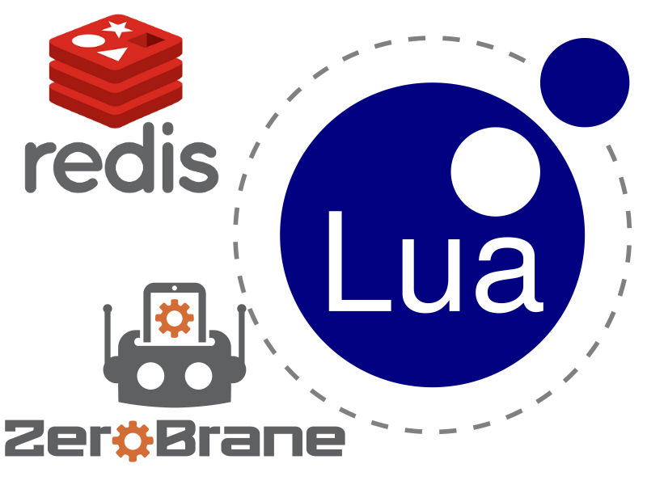
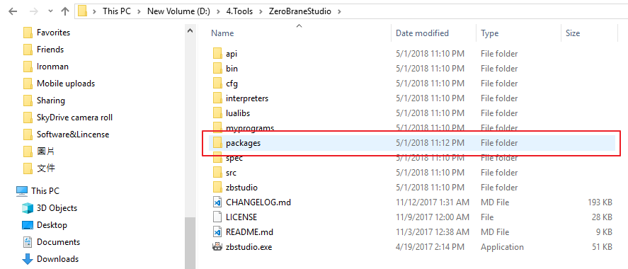
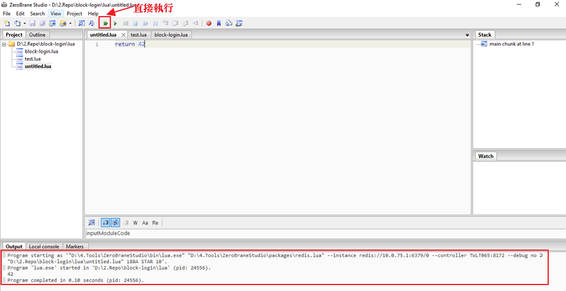
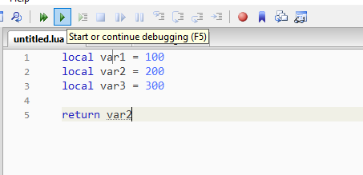
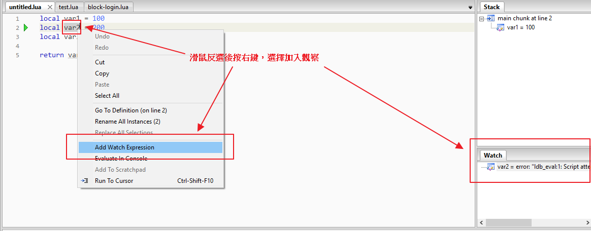

分享如何使用 ZeroBrane Studio 協助 Redis 的 Lua Script 開發與除錯。

Lua 是一個輕量級程式語言，是在1993年被發行出來，因為體積小、啟動效能快而後很廣泛的被使用在遊戲腳本、硬體腳本語言與任何與腳本相關的場合中。其他詳細內容可以參考https://www.lua.org/
使用過的 Redis 的朋友可能多多少少有聽過 Redis 在 2.6 版之後可以透過撰寫客製化的 Lua Script 來大幅增加複雜處理的效能。
但看了官方的 debug 教學影片應該會直接想要放棄…
撰寫 Lua Script 的難度與如何在開發時進行除錯一直都是新手朋友的一大問題，今天要跟大家分享的就是透過 ZeroBrane Studio 這套 IDE 工具來幫我一次解決 Redis Lua 開發的兩大問題!
ZeroBrane Studio
ZeroBrane Studio 是一套輕量級的 Lua IDE 工具，具備程式碼提示、語法提醒、遠端調用、程式碼偵錯與代碼分析等功能。
Setup and Install Redis Plugin
目前支援 Windows , Mac 與 Linux 系統。安裝上十分簡單，可以直接到官方下載相關的安裝檔案，一步步按照步驟即可完成安裝。
而在進行 Redis 的 Lua 開發前，可先到下面ZeroBranePackage/redis.lua下載對應支援的 Lua Interpreter。更多支援可參考 ZeroBrane Studio - Plugin。
接著將該 redis.lua 檔案放置執行目錄下面的 packages 資料夾下:

然後啟動 ZeroBrane Studio，新增一個 lua 檔案後即可從上方的 Project> Lua Interpreter> Redis 選定為我們欲執行的方式。
到這，前置安裝已經準備好了，接著讓我們來寫寫簡單的 Lua Script 並看 ZeroBrane Studio 如何讓 Lua 的開發變簡單。
Write Redis Lua Script
接著讓我們寫一個最簡單的 Lua 如下:
1 | return 42 |
我們可以透過IDE直接執行察看結果:

接著我們將程式碼做簡單的變數宣告:
1 | local var1 = 100 |
並透過重新執行的方式看到右邊的 Stack View 中的內容有記錄每步驟的變化”
而我們也可以透過 watch 的方式與逐步執行的方式來一步步觀察我們想確認的變數內容當前的數值:


到這邊介紹完基本的操作後，就來直接與本機或遠端的 Redis Instance 開發互動。
Testing and Debug Lua Script on ZeroBran Studio
首先我們先將 Redis Instance 建立一筆 key 為 test 數值為 100 的資料，如以下內容:

接著我們新增一個 lua 檔案，我們的目標是抓當前 key 為 test 的數值並且幫當前數值 +50，程式碼如下:
1 | local targetKey = KEYS[1] |
接著我們就可以透過先前的設定的連線方式重新設定一次當前要執行的 redis 連線:
透過先前教過的 debug 方式逐步運行即可看到下面結果與 Stack 內容:
如此我們就可以輕鬆開發 Redis Lua Script 了。這邊要稍微注意，如果要修改當前的 Redis 連線資訊必須重新啟動 ZeroBrane Studio 再按一次直接執行就會又跑出一次 redis 連線設定對話框。也就是說每次重啟的第一次可以修改，但如果要修改就必須要重新啟動…算是唯一不方便的地方。